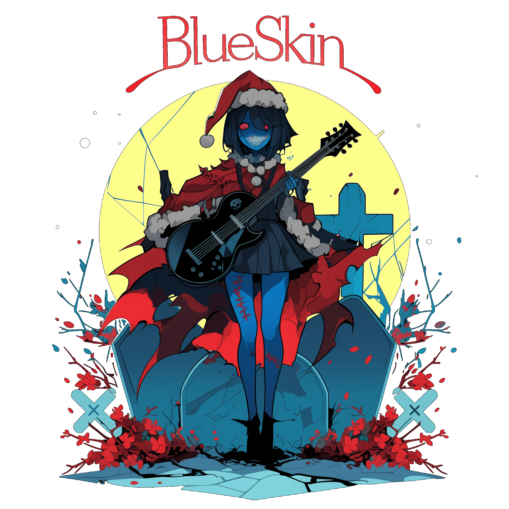
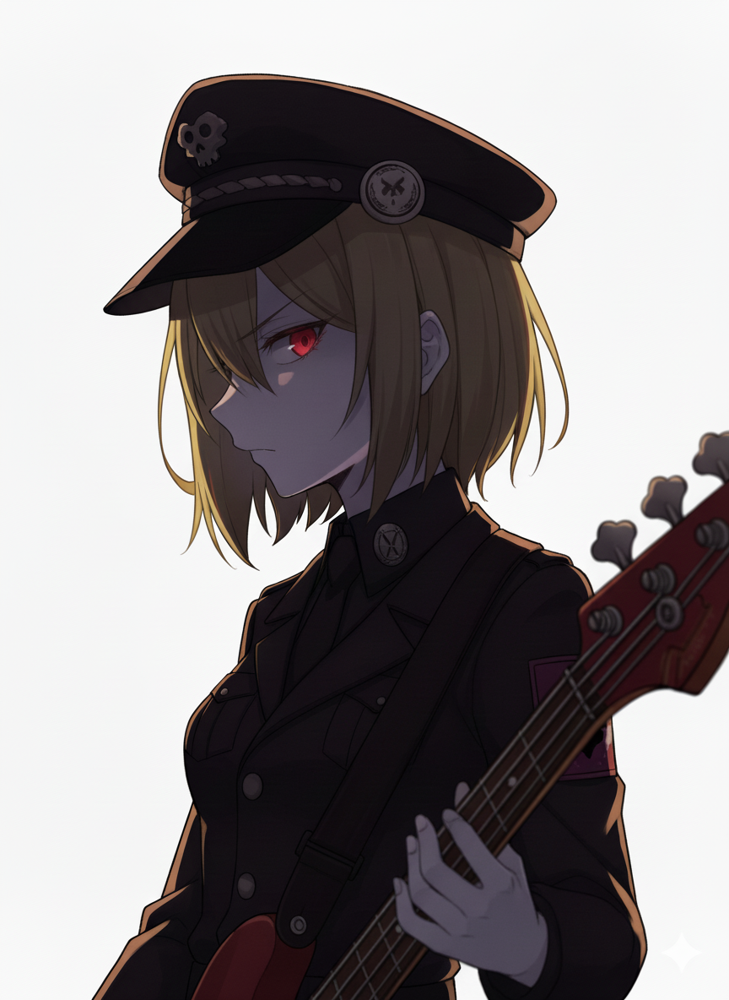
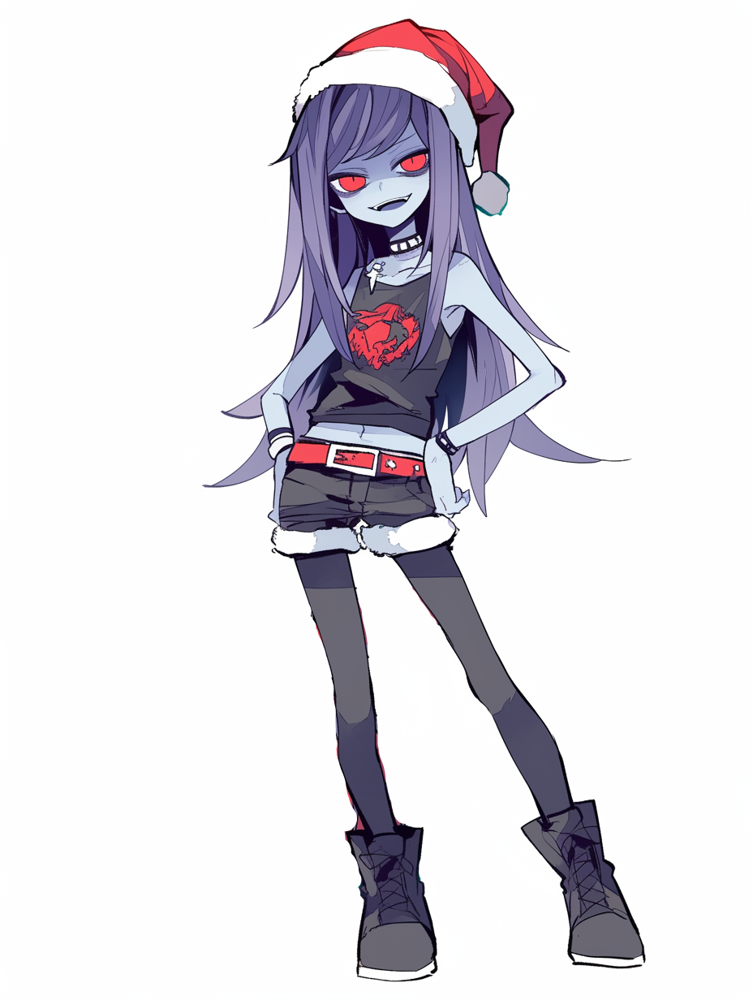
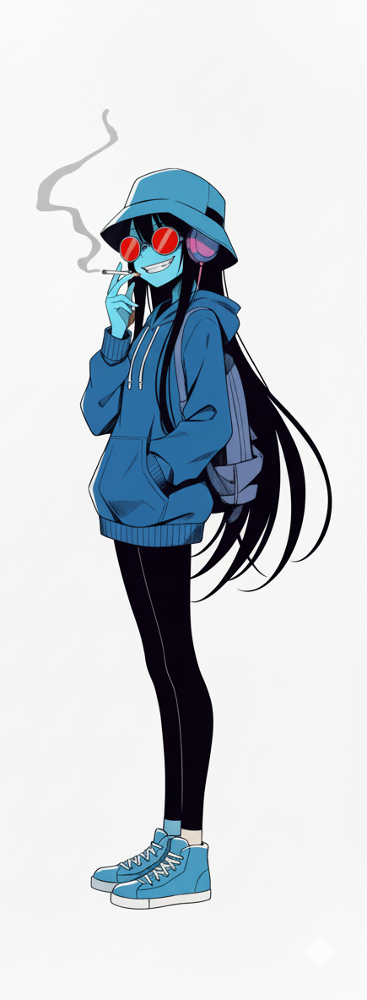

対象A: ズィ子
[Vo. / Gu.]
作詞作曲を一人でこなすバンドリーダー。黄色のギターとピンクの髪が特徴。

ZOMBIES PAINT IT FUCKIN' BLUE
墓場から蘇ったゾンビたちが、
真夜中のスタジオからパンクロックを掻き鳴らす。
楽器と魂の軋む音。
彼女たちの音楽は、死してなお響く。
"All roads lead to the grave. We are BlueSkin."
[Vo. / Gu.]
作詞作曲を一人でこなすバンドリーダー。黄色のギターとピンクの髪が特徴。

[Ba.]
軍服着用。重低音で精神を破壊する。ゾンビ界では貴重なツッコミ役。

[Dr.]
通称ビビ子。陽気で声がでかいキャラ通りのドラムビートを刻む。

[Support Key.]
常に紫煙の中にいるキーボーディスト。アル中。